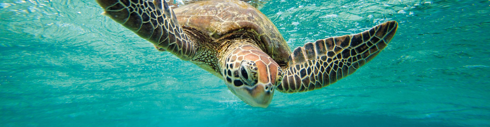

Sri Lanka's turtle hatchery locations has been a hotspot for tourists over several years. It is an experience you wouldn’t want to miss out on. Approximately 400 turtles lay eggs yearly and about 7000 baby turtles are released back into the ocean every year by Sri Lanka. There are many turtle hatcheries in Sri Lanka that prioritizes in preserving the marine ecosystem in Sri Lanka.
There are many hatcheries you can visit in Sri Lanka and experience the joy of it by yourself or with your families. Many tourists visit them when they come here to Sri Lanka. Go through our website to find out more information.

Some interesting facts about the hatcheries
Turtle hatcheries are facilities and places that nurture turtles,
protect their hatchlings from predators and other threats whilst
ensuring the turtle nests are preserved and protected.
There are many species of turtles that are currently endangered or
in threats of their hatchlings being sold by poachers and they are
also open to other external threats. Therefore, turtle hatcheries
ensure the safety of turtles and their hatchlings, and make sure
that the hatchlings are let back into the sea once they’re healthy
and strong enough
Hatcheries in Sri Lanka are mainly located in places along the
beach where sea turtles come to nest.
They keep count of how many hatchlings are released into the
ocean and the success rates of this for educational and research
purposes. This information is also used to educate tourists visiting
these hatcheries.